Clean water as a way out of poverty
How access to safe drinking water, and who controls it, shapes whether poor communities can break the poverty cycle.
Builds on: two papers on water access and water rights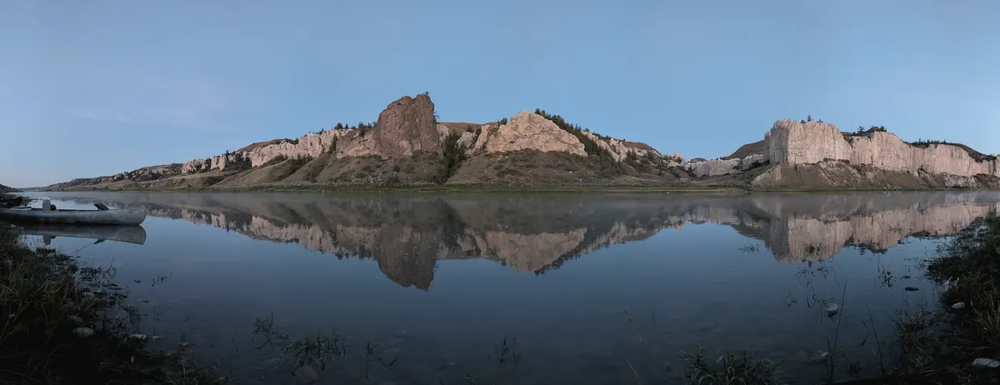
Economist · Data scientist · River & trail guide
I study how communities hold on to the value of their water, land and labor, and I bring a data scientist's toolkit and a field guide's habits to the question.
Lolo, Montana46.75° N, 114.08° WEnglish · Español
Settling into the Missoula area after a season on the river, reading for the next research project, and training for winter in the Bitterroots.
Research collaborations, research-assistant and data roles, and conversations about graduate study in resource and development economics.
2026 Lolo Trail Condition Assessment, a field survey of 22 trail segments for the Lewis & Clark Trail Alliance.
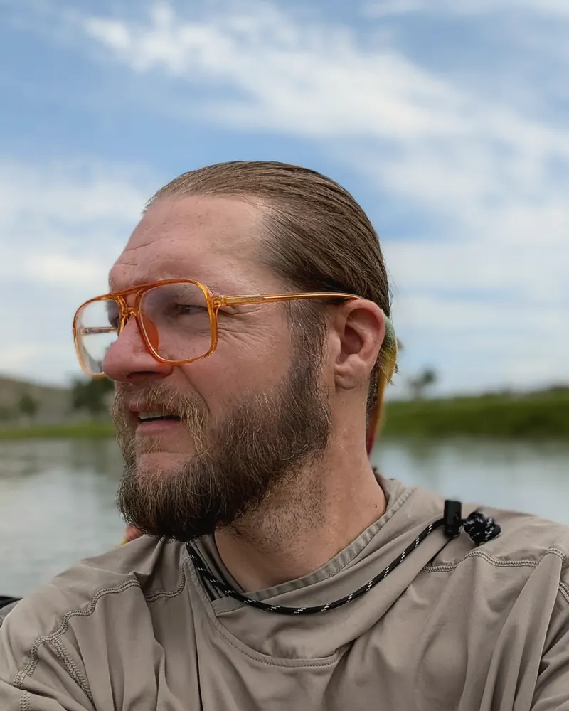
An economist by training, a data scientist by trade, and lately a guide with a camp kitchen.
I studied economics, political science and international studies at the University of Utah, then worked as a regional labor economist for the Utah Department of Workforce Services and spent five years as a research analyst and data scientist at ELITechGroup, designing validation studies and turning lab and market data into decisions. I hold a master's in International Affairs and Global Enterprise and, as of 2026, a second master's in technology innovation with an emphasis in database architecture and software engineering.
The thread through all of it is a question I first ran into on university field programs in Ecuador and Peru: when a resource leaves a place, who keeps the value? I want to answer it with careful data and with results that the people affected can actually use.
In 2026 I guided and cooked on the Upper Missouri, the Main Salmon and the Alberton Gorge, and helped assess the Lolo Trail. This winter I'm in the mountains around Missoula with a splitboard and an avalanche kit.
Development and resource economics, mostly in the Andes and the American West, with water at the center. These are the questions I keep coming back to.
How access to safe drinking water, and who controls it, shapes whether poor communities can break the poverty cycle.
Builds on: two papers on water access and water rightsCoffee, cocoa, wine and copper leave Latin America every day. I want to measure how much of that value stays with host communities, and which policies help them keep more of it.
Builds on: field programs in Ecuador, Peru and Costa RicaAs Andean glaciers and western snowpack shrink, water supply gets less predictable. I'm interested in the economic effects on the farms, towns and river economies downstream.
Builds on: a season of reading rivers for a livingHydropower in Patagonia, tourism and export crops in the Andes, and here at home, how checkerboard ownership and maintenance backlogs shape who gets to use public land.
Builds on: the 2026 Lolo Trail assessmentField reports, a published validation study and policy papers. Each one has a short case study and the full document.
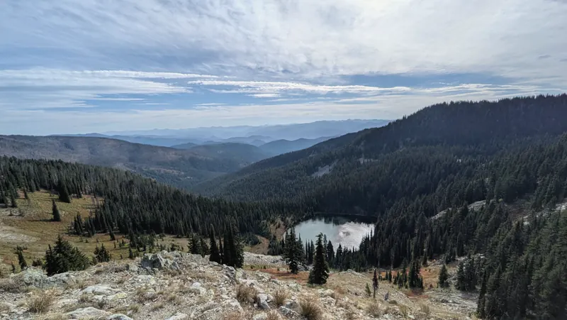
Field report · 2026Four days on foot along Lewis and Clark Trail #25, from Glade Creek near Lolo Pass toward the Weippe Prairie. We rated 22 segments on a five-point condition scale and turned them into a funding-ready project list for 2027.
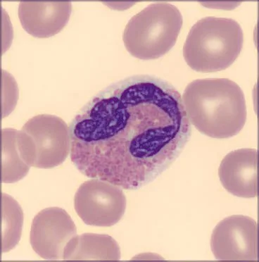
Validation study · 2021Testing whether automated white-blood-cell classification holds up across 8 stain variables and 124 slides.
Read the case study →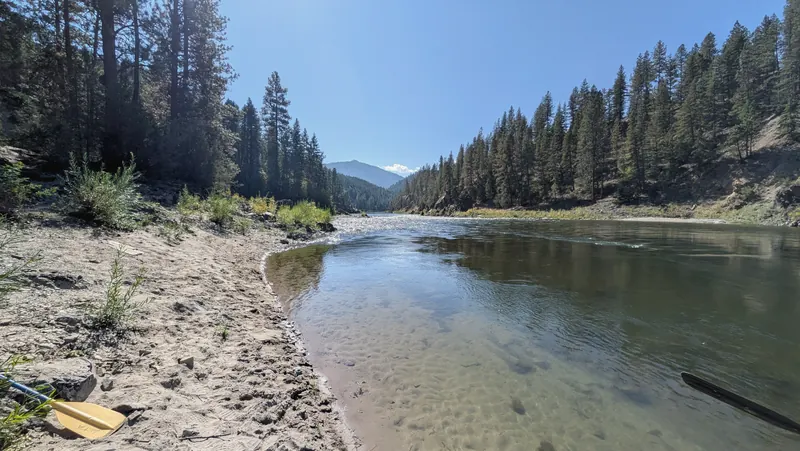
Capstone · 2013How governments, NGOs and business can widen access to safe drinking water, and where low-cost methods like solar disinfection fit.
Read the case study →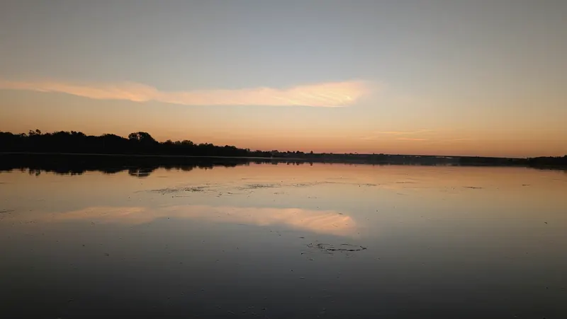
PaperThe state's role in water access, and the tension between water as a common good and a market commodity.
Read the case study →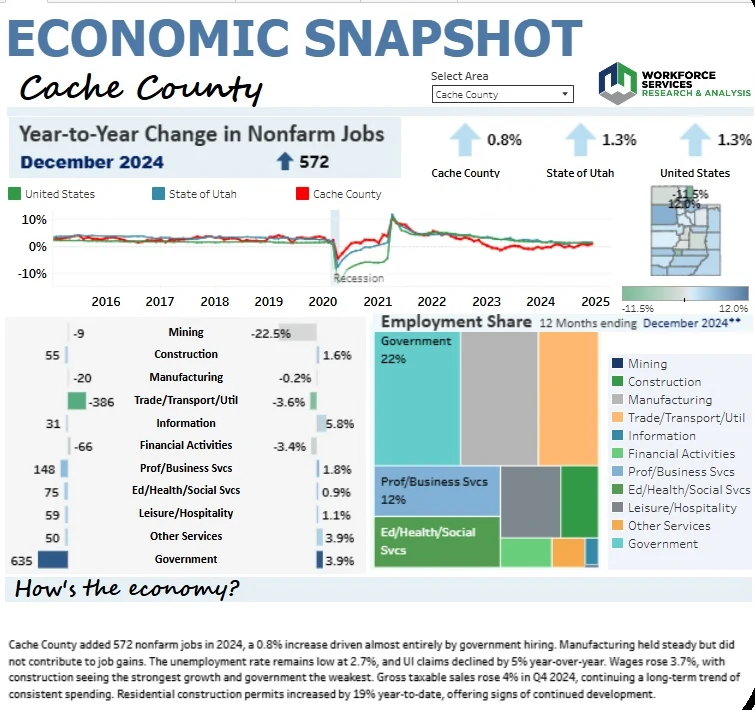
DashboardPublic Tableau dashboards of county jobs, wages and industry mix that I helped build and maintain as a labor economist.
See it in the portfolio →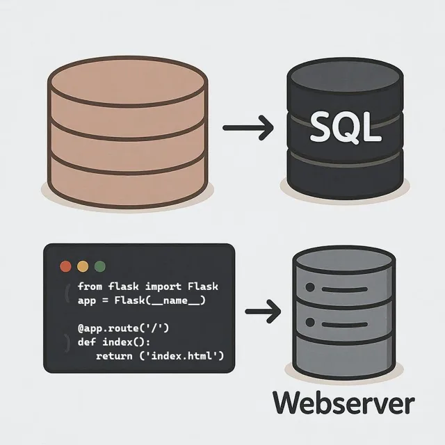
SoftwareFlask apps, database design and client websites from my software engineering master's and after.
Browse projects →Three toolkits that I use together: economics to frame the question, software to handle the data, and fieldcraft to get it right on the ground.
Labor-market analysis, experimental and validation design, regression and descriptive statistics, and writing for policy audiences.
Pipelines, databases and dashboards that other people can use without me in the room, plus full-stack web work.
Survey and GPS work in rough terrain, multi-day logistics, and interviews and fieldwork in Spanish.
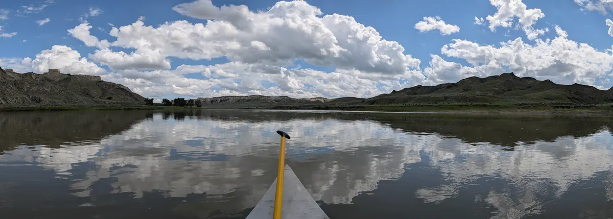
Multi-day canoe and raft trips through the White Cliffs and Missouri Breaks. Guide, cook and host.
Week-long wilderness trips: camp, kitchen and the history talks.
Whitewater day trips on the Clark Fork west of Missoula.
Trail trips all summer, then a four-day condition assessment of Trail #25 in September.
Season 2026 · Lewis & Clark Trail Adventures
I ran field operations and logistics on extended overnight trips and interpreted the history of the places we traveled through: the Nez Perce and other Native nations, the Corps of Discovery, the fur trade and the steamboat era.
A river trip is organized chaos: weather, water levels, a boat full of guests and a kitchen on a gravel bar. It rewards the same habits as good research. Plan carefully, watch what's actually happening, and adjust.
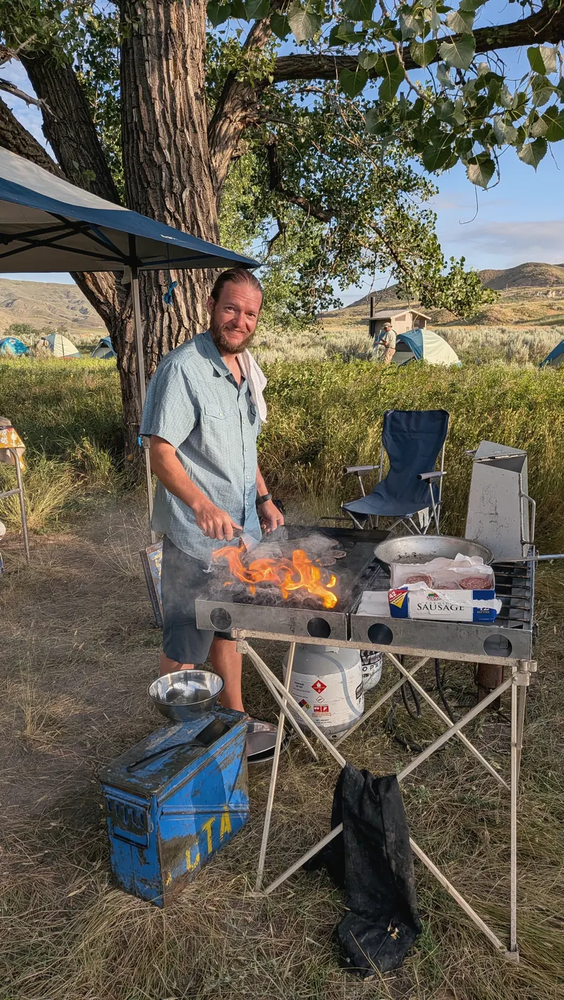
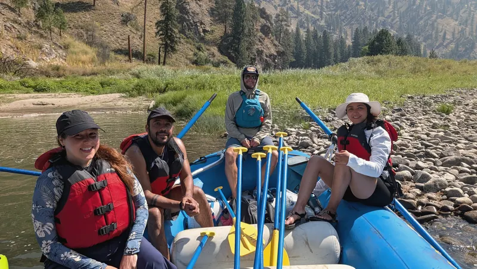
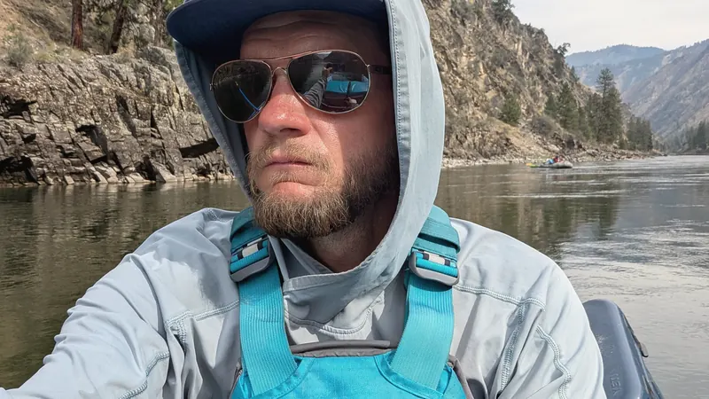
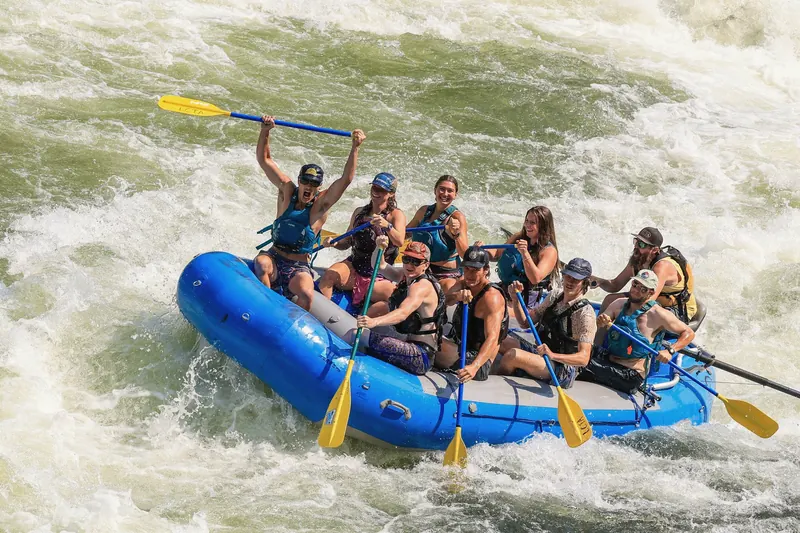
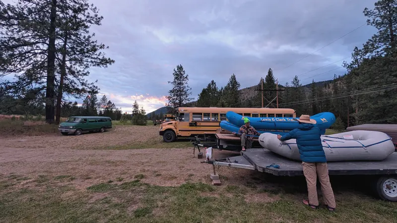
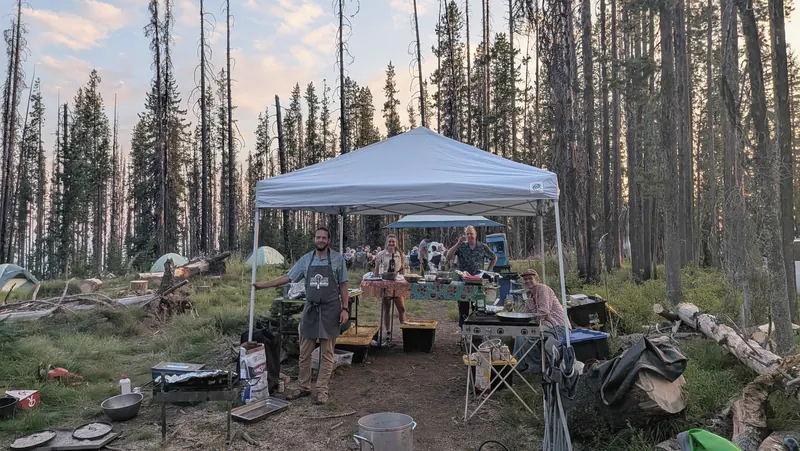
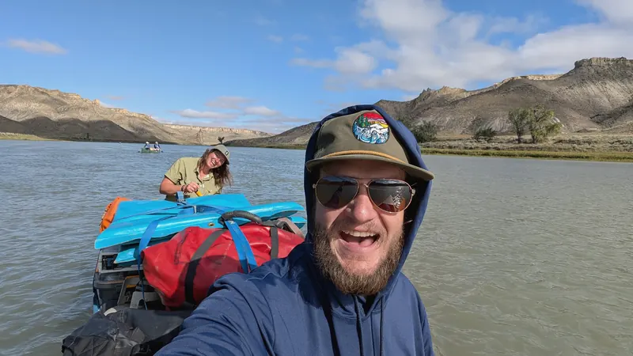
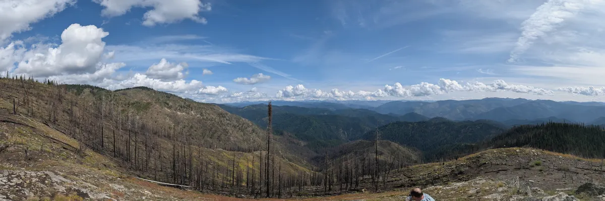
Rivers, ridgelines and a few powder days, mostly from 2026 with some Andes winters mixed in. Tap a photo to see it bigger.
I'm open to research collaborations, research-assistant and data roles, conversations about graduate study, and the occasional river trip. Write to me in English or Spanish.